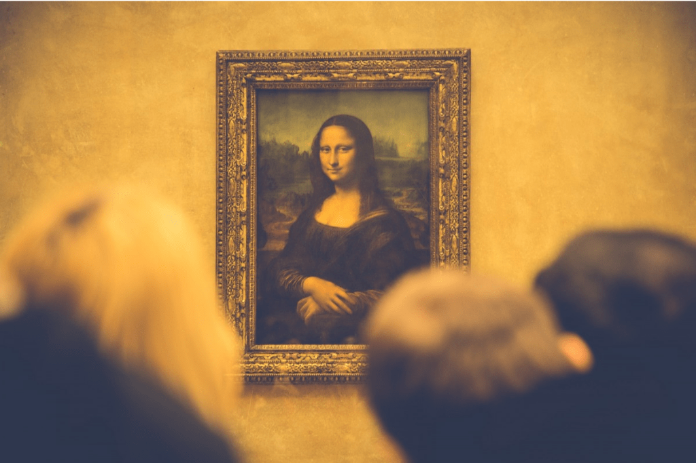
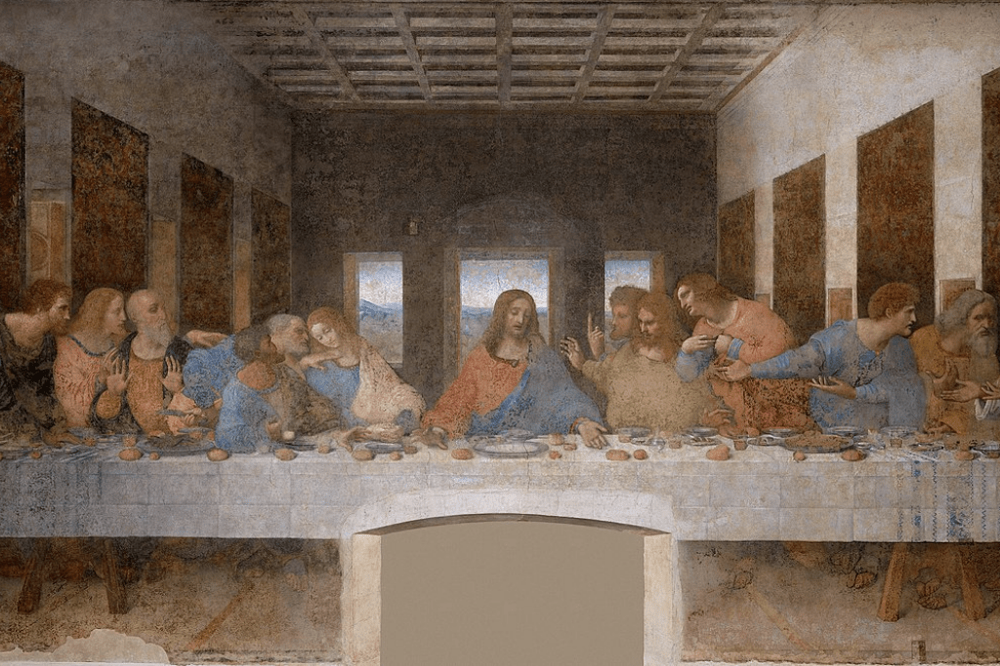
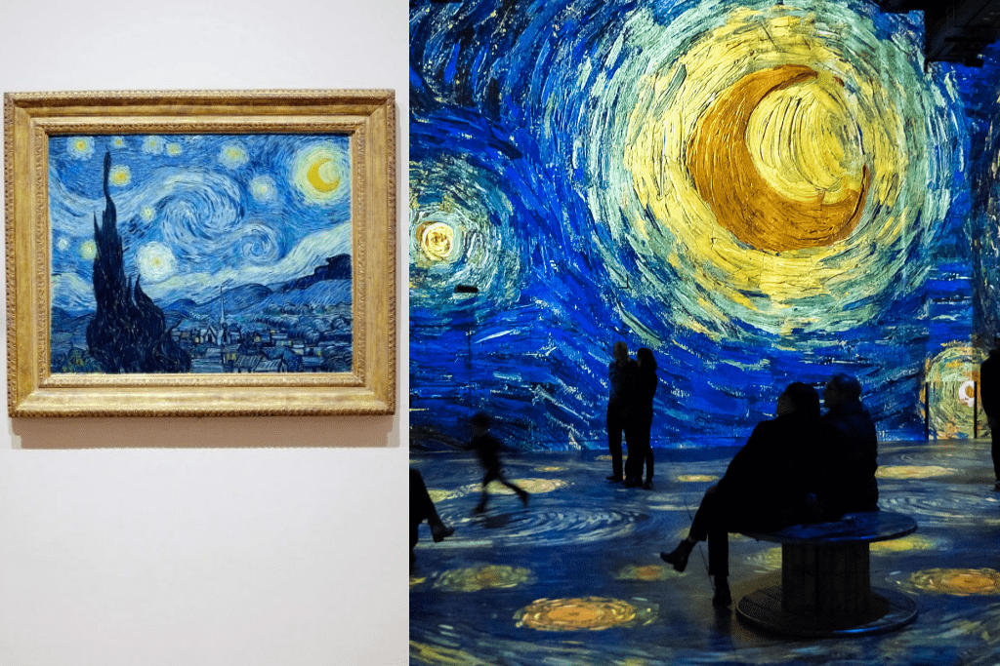

Art
Our art museaum contains some of the most popular and historic painting’s in the world.
1. Mona Lisa
Estimated date: 1503 to 1519. This classic painting is not only the most famous painting but also the most expensive artwork of all time. Painted by none other than maestro Leonardo Da Vinci. Mona Lisa is perhaps the most recognized piece of artwork in the world. Why is Mona Lisa’s painting so famous? It is said that the prominence of this painting is a result of many chance circumstances combined with the painting’s inherent appeal. The Mona Lisa portrait painting got its fame and became a household name in 1911 when it was hidden by an ex-Louvre employee for two years. It was true for Leonardo when he said that, “Art is never finished, only abandoned.’’ He worked on this masterpiece for 20 years and even carried it everywhere with him. It is now home to Louvre Museum, Paris, France (the house to all the famous paintings).
2. The Last Supper
The painting depicts the last time Jesus broke bread with his disciples before his crucifixion. This huge fresco of 4.60 meters (15 feet) high and 8.80 meters (28.9 feet) wide was painted in an era when religious imagery was still a dominant artistic theme. It is undoubtedly one of the most important paintings of all time, both for its innovative approach and for the impact it has had on artists of all ages. We are today looking at very little of this famous artwork of the last supper, as a fact, it has not stood the test of time well. Over the years the fresco has survived wartime threats and vandalism. The Last Supper resides in the Convent of Santa Maria delle Grazia in Milan, Italy, and is one of the top famous artworks in history.
3. The Starry Night
Widely hailed as his magnum opus, this paintings’ beauty is timeless and universal. The starry night is a visually arresting painting, with its striking blues and yellows and the dreamy, swirling atmosphere that has intrigued artists for decades. Suffering from bouts of depression and paranoia, Van Gogh painted this work of art in the asylum of Saint-Paul-de-Mausole near Saint-Remy-de-Provence. Van Gogh, who posthumously became one of the most famous painters in the history of Western art. This popular painting hangs on the walls of The Museum of Modern Art, New York.